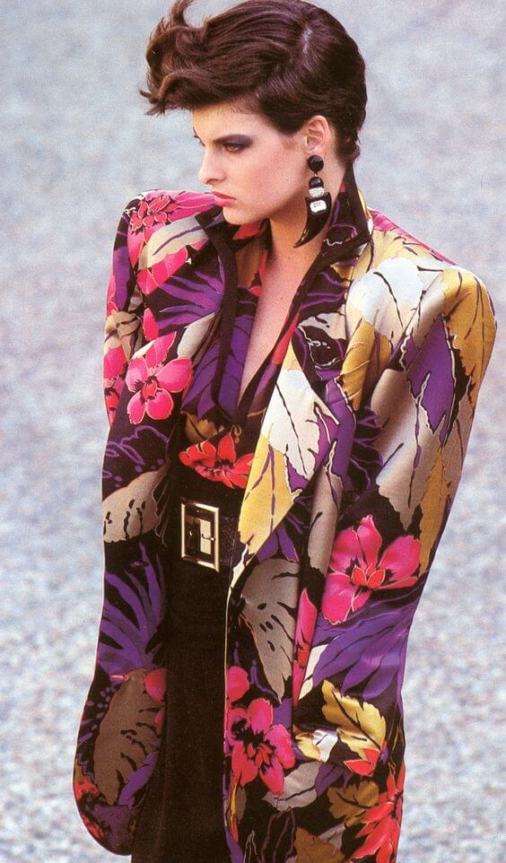
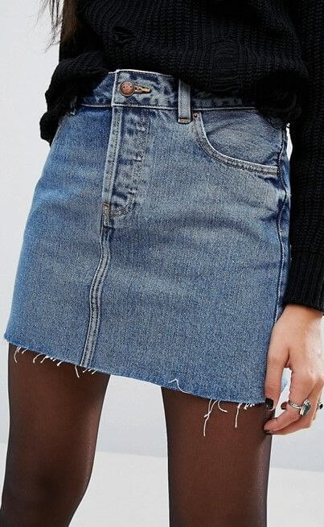

Moda en los 80's
A pesar de que en los años 70 ya fue todo un comienzo de una
revolución en el mundo de la moda, nada tiene que ver con la moda de
los años 80 donde se comienzan a utilizar pendas de colores
brillantes, accesorios que no pasan desapercibidos y prendas de todo
tipo, desde ceñidas a holgadas, con cortes y peinados de cabello que
no pasaban desapercibidos.
La moda de los años ochenta en Gran Bretaña, América, Europa y
Australia tenía un gran énfasis en la ropa cara y los accesorios de
moda. La ropa tendió a ser muy brillante y vívida en apariencia. Las
mujeres expresaron una imagen de riqueza y éxito a través de
brillantes joyas de fantasía, como grandes aretes de imitación de
oro , collares de perlas y ropa cubierta con lentejuelas y
diamantes. La moda punk comenzó como una reacción contra el
movimiento hippie de las últimas décadas y los valores materialistas
de la década actual. La primera mitad de la década fue relativamente
moderada en comparación con la segunda mitad, que es cuando el
icónico esquema de color de la década de 1980 llegó a ser popular.
Hombreras: Una de las características más llamativas y clásicas de la
moda de los 80 fueron las hombreras.


Minifaldas: Las minifaldas también se impusieron en aquella época en
todo tipo de tejidos, desde las faldas vaporosas con vuelo a las más
ceñidas. Siempre con colores muy llamativos y vivos, lo ideal es que
llamen la atención pudiendo optar incluso por colores brillantes o de
neón. En cuanto al tejido, podemos encontrar faldas de tul, de tela o
incluso de cuero.
Medias y leggins: Con estampados, diseños o colores que capten la
atención de cualquiera como unos leggins de bordados o rayas. También
optaban por las prendas holgadas y escogían una talla más gran80'se que
la que necesitaban.
Pantalones de paracaídas: Son un estilo de pantalones caracterizados
por el uso de nylon ripstop o cortes extremadamente holgados. En el
estilo original de cierre hermético, con cierre de cremallera de
finales de los 70 y principios de los 80, el "paracaídas" se refería
al material de nylon sintético de los pantalones. En la década de
1980, el "paracaídas" pudo haberse referido a la extrema holgura del
pantalón. Estos también se conocen como pantalones "Hammer", debido al
estilo característico del rapero MC Hammer.